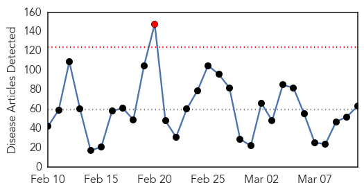
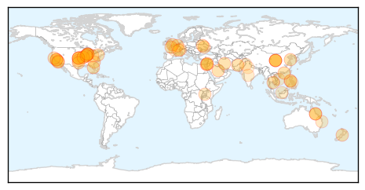
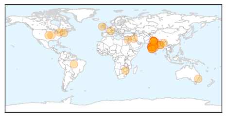
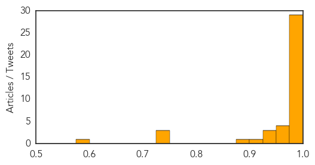

Unknown
30-Day Web Trend
1 alerts, 0 warnings

30-Day Twitter Trend
0 alerts, 0 warnings

Article Locations

Article Confidences

Top Articles:
- 0.991
- Ross River virus reduced thanks to lack of rain
- 0.970
- Mutating H7N9 bird flu may pose pandemic threat, scientists warn
- 0.969
- Mutating H7N9 bird flu may pose pandemic threat, scientists warn
- 0.967
- Mutating H7N9 bird flu may pose pandemic threat, scientists warn
- 0.967
- Mutating H7N9 bird flu may pose pandemic threat, scientists warn
- 0.966
- Mutating H7N9 bird flu may pose pandemic threat, scientists warn
- 0.917
- Chicago Tribune
- 0.917
- Chicago Tribune
- 0.917
- Chicago Tribune
- 0.917
- Chicago Tribune
- 0.917
- Chicago Tribune
- 0.917
- Chicago Tribune
- 0.917
- Chicago Tribune
- 0.917
- Chicago Tribune
- 0.917
- Chicago Tribune
- 0.917
- Chicago Tribune
- 0.917
- Chicago Tribune
- 0.917
- Chicago Tribune
- 0.917
- Chicago Tribune
- 0.917
- Chicago Tribune
- 0.917
- Chicago Tribune
- 0.917
- Chicago Tribune
- 0.917
- Chicago Tribune
- 0.917
- Chicago Tribune
- 0.917
- Chicago Tribune
- 0.917
- Chicago Tribune
- 0.917
- Chicago Tribune
- 0.917
- Chicago Tribune
- 0.917
- Chicago Tribune
- 0.910
- The world windows to Thailand
- 0.905
- H5N2 Bird Flu Confirmed In Two Missouri Turkey Facilities
- 0.903
- Radical vaccine design effective against herpes viruses
- 0.893
- Officials urged to stop HIV’s spread, National, Phnom Penh Post
- 0.865
- 100 Palestinians diagnosed with Brucellosis so far in 2015
- 0.856
- Water crisis surfaces memories of giardia outbreak in Tuna Valley: News
- 0.803
- Blinding Cases Of Syphilis On The West Coast Prompt Health Alert In LA County
- 0.790
- Poultry producers fall with avian flu discoveries
- 0.781
- Ohio State Representative John Patterson announces resolution to fight Lyme disease
- 0.774
- Ross River vaccine not considered financially viable to manufacture
- 0.759
- Hayward tuberculosis case draws health workers to school
- 0.744
- Military joins fight to contain typhoid
- 0.743
- Tuberculosis testing to take place Friday after confirmed case at Conway High
- 0.719
- Facing Up to Chronic Disease by George Weisz
- 0.702
- Parkland claims success in preventing hospital-associated infections
- 0.697
- Los Angeles DOH Reports 2 Cases Of Blinding Syphilis
- 0.688
- Raw Cashew Cheese Sickened 17 with Salmonella in 2014
- 0.675
- Ross River vaccine ‘not viable’
- 0.670
- Manning River Times
- 0.660
- State records sharp increase in HFMD cases – BorneoPost Online
- 0.627
- Bird flu found in second turkey flock in Missouri
Showing top 50 articles...
Top Tweets:
-
No tweets found for Mar 11, 2015
Swine Flu
30-Day Web Trend
11 alerts, 13 warnings

30-Day Twitter Trend
2 alerts, 0 warnings

Article Locations
Article Confidences
Top Articles:
- 1.000
- India Struggles to Contain Worst Swine Flu Outbreak Since 2009
- 1.000
- Manipur swine flu patient dies
- 1.000
- India swine flu has mutated to become more deadly as virus claims 1,200 lives
- 1.000
- India Struggles to Contain Worst Swine Flu Outbreak Since 2009
- 0.999
- Haryana minister's advice to avoid Swine flu
- 0.999
- Silent spread of bird flu raises pandemic fears › News in Science (ABC Science)
- 0.999
- Injectible vaccine has few takers among health workers
- 0.998
- Control swine flu: Assam CM tells health department
- 0.998
- Control swine flu: Assam CM tells health department
- 0.998
- Control swine flu: Assam CM tells health department
- 0.998
- City doctors recommend awareness and vaccination to combat swine flu
- 0.998
- INFORMATION AND SERVICES IN GOA. Goa News, Goa Konkani News, Goa Sunaparant News, Goan Konakani News, Goa Video News, Goa Yellow Pages
- 0.998
- Kansas State professor tracks deadly diseases from animals to humans
- 0.998
- Kansas State professor tracks deadly diseases from animals to humans
- 0.997
- Control swine flu: Assam CM tells health department
- 0.997
- Control swine flu: Assam CM tells health department
- 0.997
- Control swine flu: Assam CM tells health department
- 0.997
- Control swine flu: Assam CM tells health department
- 0.996
- Vaccinating against swine flu now not advisable
- 0.996
- Swine flu confirmed but `no cause for panic` says Principal Secy Health
- 0.993
- District magistrate among 126 swine flu patients in Bihar
- 0.993
- Clue to swine flu severity
- 0.993
- Nagpur Municipal Corporation claims it’s fighting swine flu with all means
- 0.991
- Haryana minister's advice to avoid Swine flu: Don't shake hands, say 'namaste'
- 0.987
- For swine flu patients in Narela, nearest treatment centre is 25 km away
- 0.986
- Suspected swine flu patient dies in IDH
- 0.984
- Swine flu outbreak sweeping India worse than health officials admit, study suggests
- 0.984
- No Change in Strain of H1N1 Virus, say Doctors
- 0.984
- Khader: Standard Treatment Protocol for Swine Flu Soon
- 0.974
- 'Govt. remaining mute witness to swine flu': PC Chacko
- 0.966
- Woman dies of swine flu infection, death toll in Mumbai touches 23
- 0.959
- Camphor, cardamom have no role in killing swine flu virus, say Bhopal docs
- 0.953
- Orientation programmes for doctors treating H1N1 patients: Khader
- 0.939
- Swine flu kills senior doctor kin demand compensation
- 0.933
- Four new swine flu cases detected in Chitwan
- 0.930
- Palestinian from Bethlehem dies of H1N1 swine flu: medics
- 0.919
- Swine Flu claims three lives in Jharkhand
- 0.879
- Indian Swine-Flu Virus Reveals Dangerous, New Mutation
- 0.748
- Namaste can help check swine flu spread: Anil Vij
- 0.743
- Swine flu cured but shock of treatment in dirty ward stays
- 0.737
- Swine flu protest rocks House
- 0.580
- Pricing of electricity and gas
Top Tweets:
-
No tweets found for Mar 11, 2015